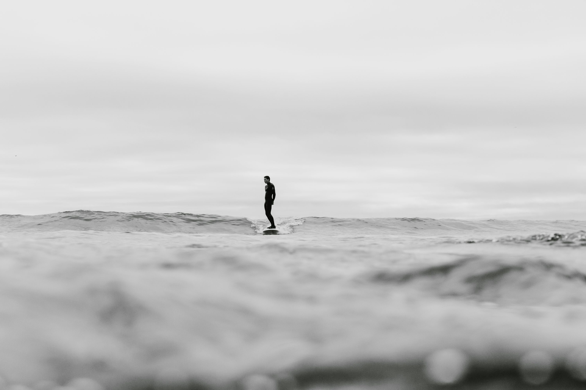

Web Graphics Assignment

Questions & Answers
- What kind of photos are good to encode using JPEG?
JPEG works best for photographs or images with lots of colors and gradients. It compresses the image well while keeping good quality.
- What kind of photos are good to encode using GIF?
GIFs are good for simple images with few colors, like logos, icons, or short animations.
- What is unique about the PNG format?
PNG supports transparent backgrounds and uses lossless compression, so the quality stays sharp.
- How do you resize your photo to the size it should be displayed?
Resize the photo using photo editing software or online tools before uploading it.
- Why should you resize photos using photo editing software instead of resizing it using CSS?
CSS only changes how the image looks on the screen, not the actual file size. Large files slow down websites, so editing software reduces both size and load time.